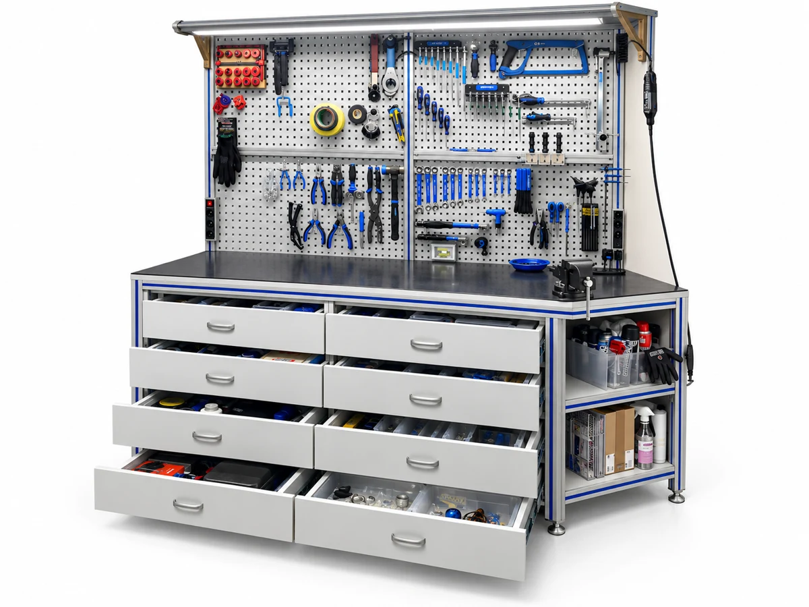
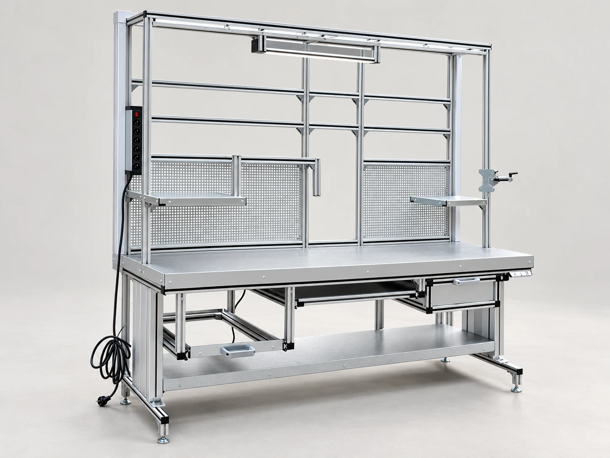
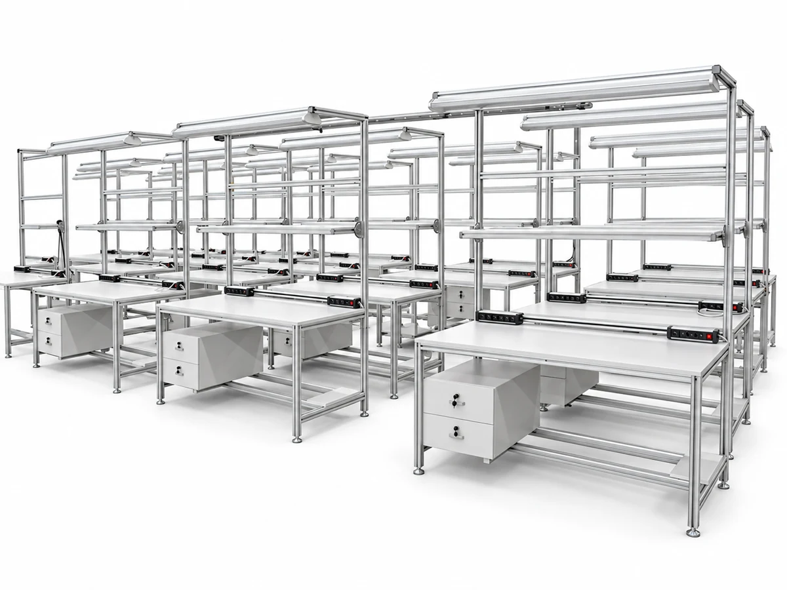
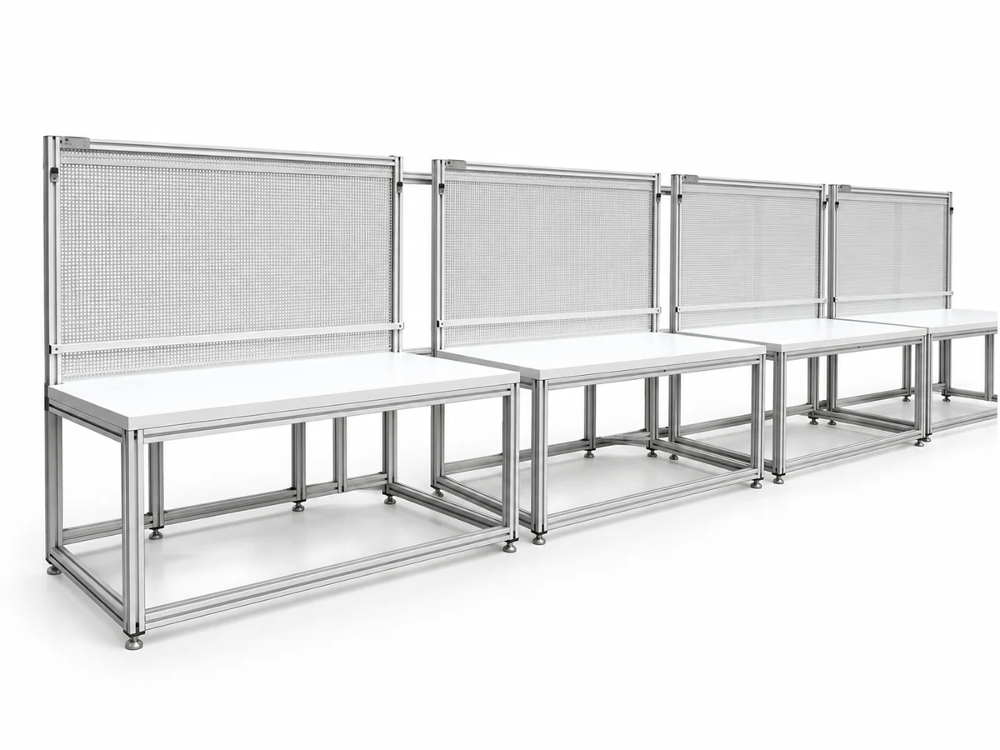
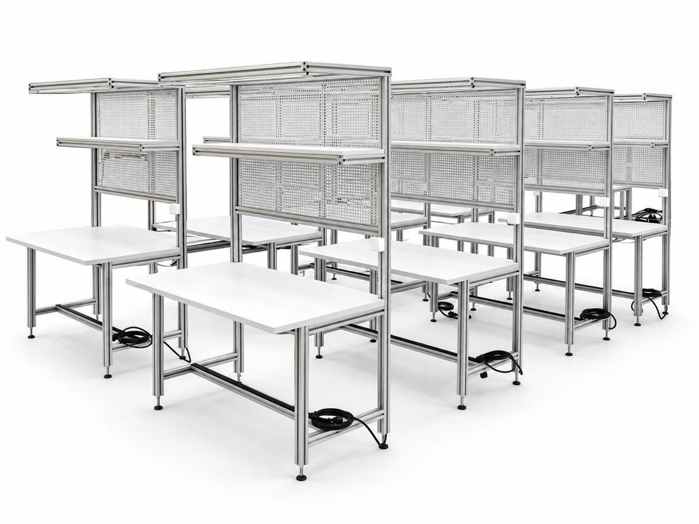
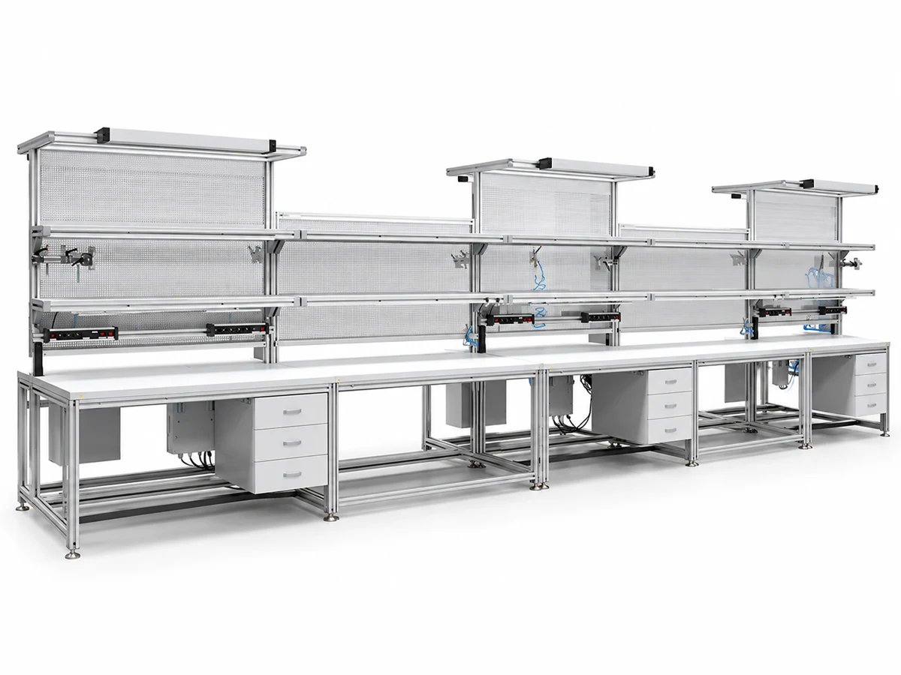
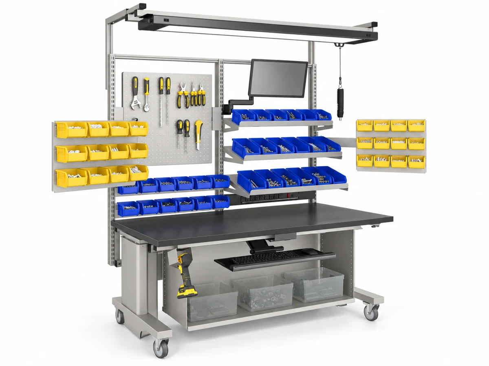

Pegboard Assembly Workbench
Assembly workbench with a pegboard panel for hanging tools and fixtures.
View configurationProducts / Ergonomics · Modular systems
Modular workbenches that put tools, components and task lighting within reach.
Discuss your application
Explore the range

Assembly workbench with a pegboard panel for hanging tools and fixtures.
View configuration
ESD-safe workbench with pegboard, suited to electronics assembly.
View configuration
Grouped workbenches with drawer storage for team assembly cells.
View configuration
Row of benches with a mesh back panel for organised, shared workspaces.
View configuration
Bench row with a perforated back panel for mounting tools and accessories.
View configuration
Multi-bay bench line for high-volume manual assembly.
View configuration
Labeled reference showing the configurable components and add-ons available on a workbench.
View configurationPlan the right fit
What work happens here, and in what sequence?
Which components, tools and controls need to be close at hand?
What floor space, lighting and ESD requirements apply?
Useful to shareA task sequence, component and tool list, and the available working space.
Prepare your briefRelated capability
Let’s make it work